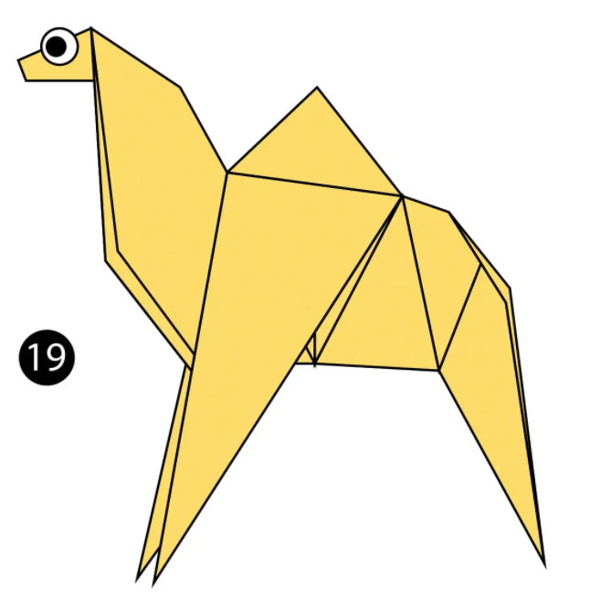
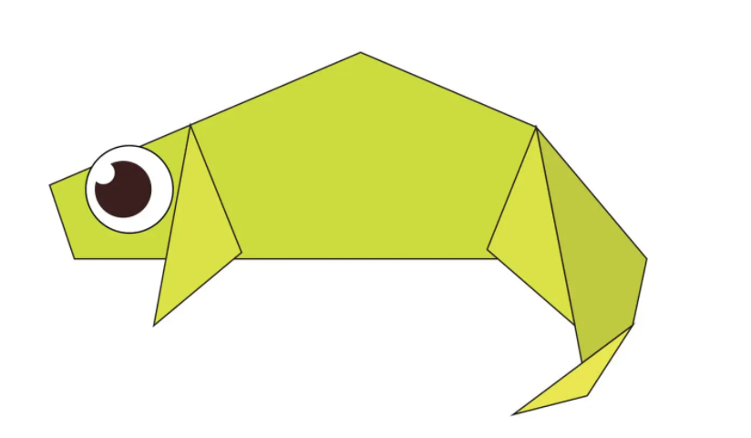
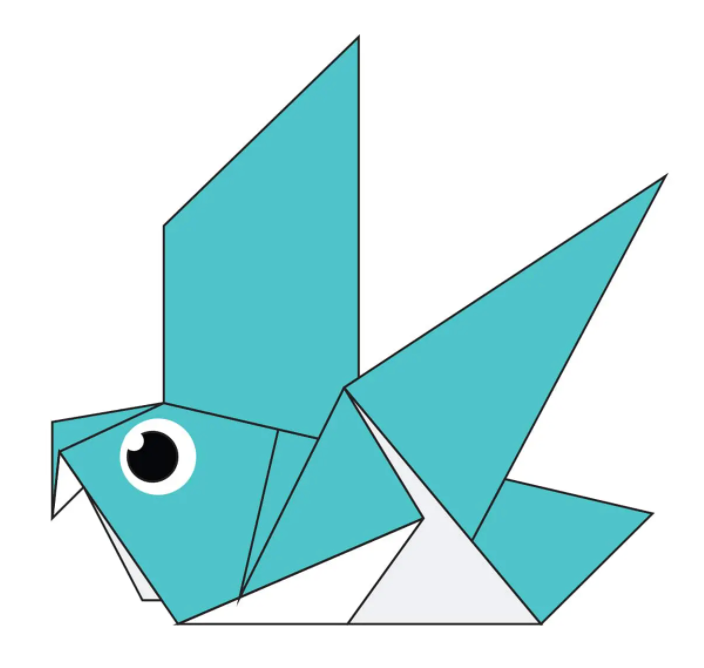
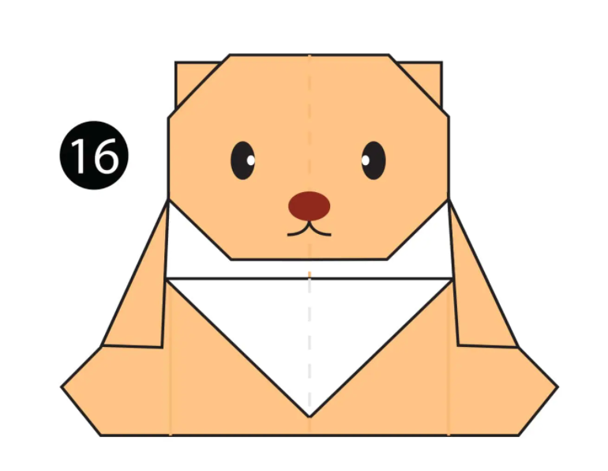
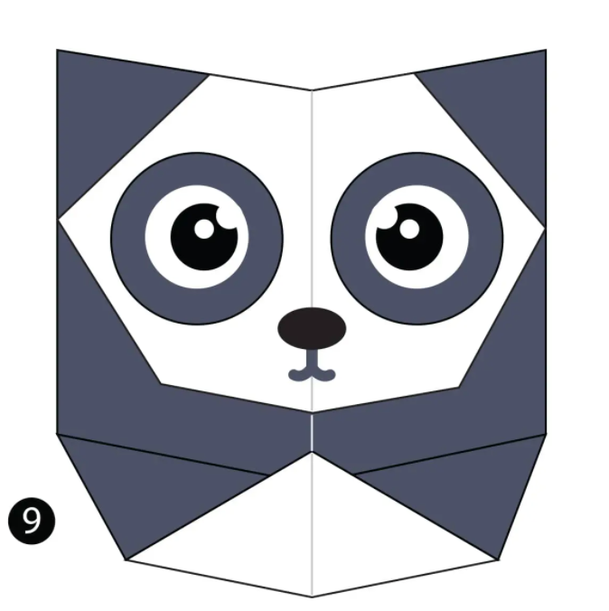
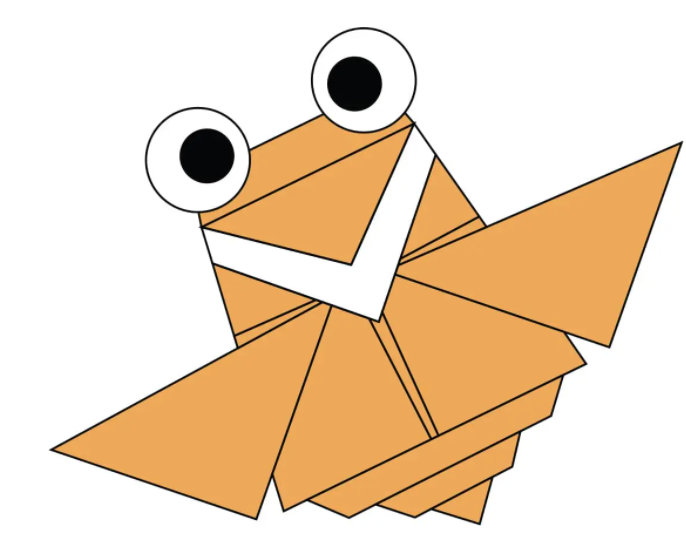

about us
follow us
Origami Designes

facts about camel
camels ears are funny they drink itas much as possible
camels can move easily across the sand because of specially desgned foot
once the found water they

facts about chamaleon
chamaleon are reptiles which are part of iguana suborder
changing colour is an important part in communication among chamaleons
most chamaleons have prehensile toil that they used to wrap around tree branches

facts about piegons
piegons are incredibly complex and intelligent animals
piegons are reowned for their outstanding navigational identities
piegons have excellent hearing abilities

facts about teady bear
The teddy was named after President Theodore Roosevelt, after he refused to shoot a bear during a 1902 hunting trip.
- The first toy stuffed bear was created by German toymaker Margarete Steiff. She created a soft plush with movable arms and legs and a friendly face after taking her nephew to the zoo in 1903.
- The Oxford English Dictionary dates the first use of the term teddy bear to 1906.

facts about panda
Pandas have so many fans because they look cute
Giant pandas are good at climbing trees and can also swim
Pandas are "lazy" — eating and sleeping make their day. ...

facts about flying cicada
There are around 3,000 cicada species, according to National Geographic
Their wings are transparent and can seem rainbow-hued when held up to a light source.
Cicadas can be black, brown or green and can have red, white or blue eyes.